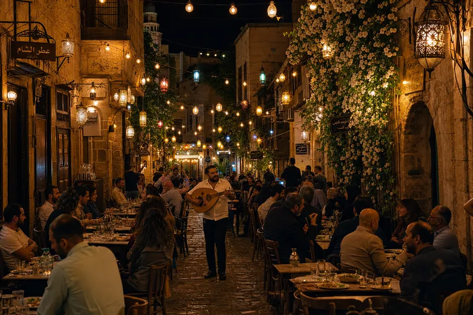
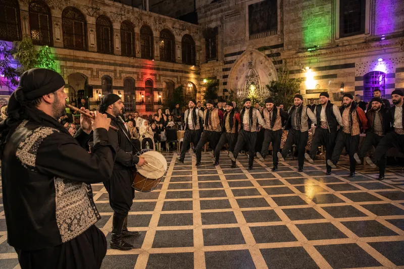
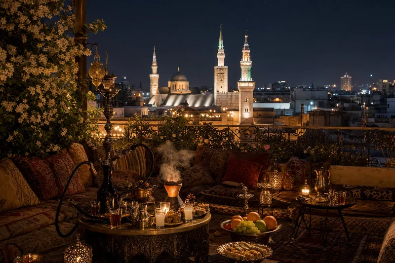
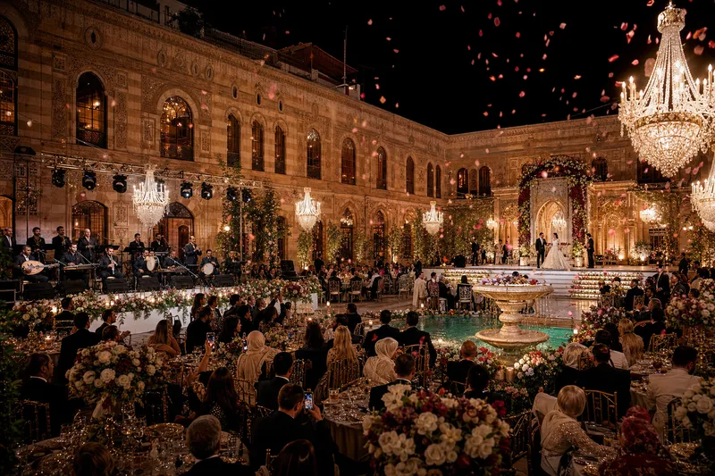
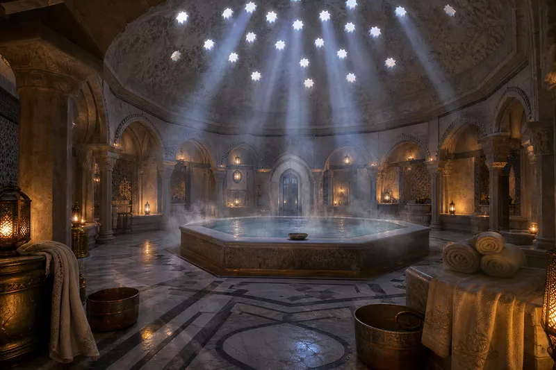
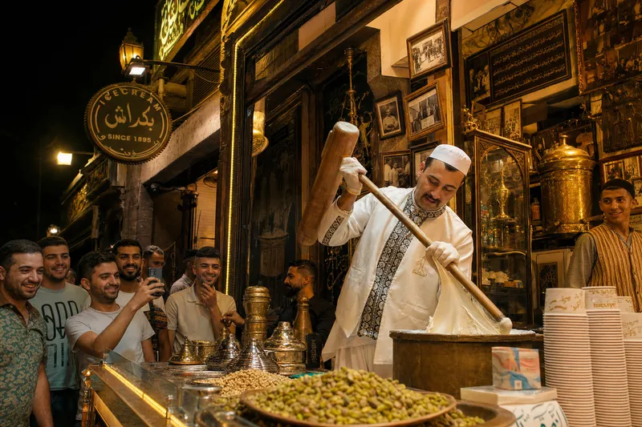

The mosque was the prayer. Now comes the music. Damascus prays by day and dances by night. The same people. The same God. He doesn't mind. He made the arak too.

After the last prayer, the city changes its clothes. The muezzin's echo fades into oud strings. The same alley that sold spices at noon now sells stories at midnight. The lanterns go up. The chairs come out. The arak arrives without being ordered because the waiter has known your father since the war.
The jasmine doesn't sleep. It smells stronger at night. As if it knows what's coming. As if it approves.

The line forms. Arms linked. The leader holds the handkerchief. The drum hits and the floor shakes and four thousand years of people stomp the same rhythm into the same stone. The grandfather watches from his chair. His foot is tapping. His heart is twenty.
Nobody teaches the dabke. You are born with it. The first kick comes from the womb. The last one comes at the funeral — when the pallbearers can't help it and the procession becomes a dance and nobody apologizes because this is Damascus and grief and joy use the same muscle.

Above the old city. The minaret is lit. The hookah smoke curls toward the stars and the stars curl back. From up here, Damascus looks like a jewel box that someone left open.
The tea is sweet. The arak is not. The conversation starts at politics, passes through football, arrives at love, and ends at God. Every night. The same trajectory. The same table. The same friends who disagree on everything and agree on this: there is no city like this city. There never was.

The Damascene wedding is not an event. It is a war. A logistics operation. A financial crisis. A theatrical production with five hundred critics in the audience, all of them relatives, all of them with opinions about the bride's dress, the groom's family, and the quality of the kibbeh.
The zaffe comes down the street like an invasion — drums, horns, men carrying the groom on their shoulders, women ululating at a frequency that breaks glass. The bride enters last. She always enters last. Damascus taught the world the entrance.

Before the party. After the party. The hammam doesn't care about the timeline. The steam has no clock. The marble is warm. The dome has star-shaped holes and the light falls through them like the universe is watching you undress and approving.
The scrub removes everything — dead skin, bad decisions, yesterday's argument with your mother. You emerge pink and new and smelling like laurel soap. You are ready. For what, you don't know. But you are ready.

Bakdash. Since 1895. The man pounds the ice cream with a wooden mallet like he is forging a sword. The mastic stretches. The pistachio falls like green snow. The crowd watches. The tourists film. The Damascene waits because he knows — the show IS the dessert. The eating is secondary.
You eat it from a brass bowl. It fights back. It stretches. It refuses to leave the spoon. This is not ice cream. This is a relationship. It is complicated. It is sweet. It will not let go.
Turns white when you add water. Like truth when you add honesty.
Forty small plates. None of them necessary. All of them mandatory.
The charcoal knows. The meat knows. You just sit there.
One string cries. The other five explain why.
Two apples. One coal. Three hours of saying nothing important. The best hours.
Nobody planted it. Nobody waters it. It grows because Damascus asked it to.
Thick as mud. Sweet as revenge. Read the cup after. It always says the same thing: more coffee.
Free. End of party. Beginning of morning. The sun in your hand. Always.
He brought theatre to Damascus. They burned his theatre. He built another. They burned that too. He died. The theatre survived. It always does.
The first in line. Holds the handkerchief. Sets the rhythm. If he falls, the line falls. He never falls.
He plays tarab — the ecstasy. The music enters the chest before the ear. The audience sways. Nobody taught them. The oud taught them.
She enters last. She always enters last. The zaffe clears the way. The city holds its breath. She walks like she owns the alley. Tonight, she does.
Bakdash. The mallet. The mastic. The pistachio. He has been pounding since 1895. His arms are theology.
He knows every body. Every scar. Every tattoo. He says nothing. The steam says everything.
A boy. Always a boy. A string of jasmine for one lira. The smell lasts longer than the economy. He knows this. He charges accordingly.
"The mosque held the prayer. The street holds the party. The rooftop holds the secrets. The hammam holds the steam. The oud holds the crying. The arak holds the truth. And the jasmine — the jasmine holds Damascus together. Without it, the walls would fall. Not from war. From loneliness."— THE DAMASCENE NIGHT — PAGE 39 OF THE JOURNEY —